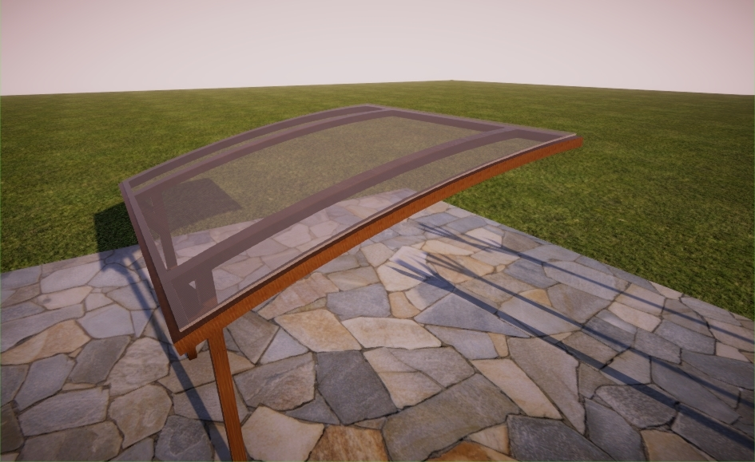
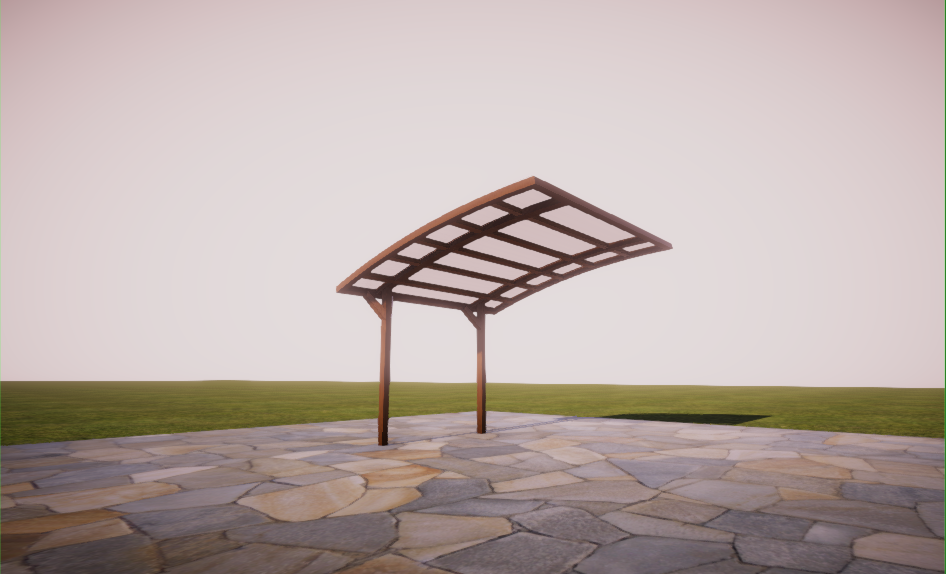
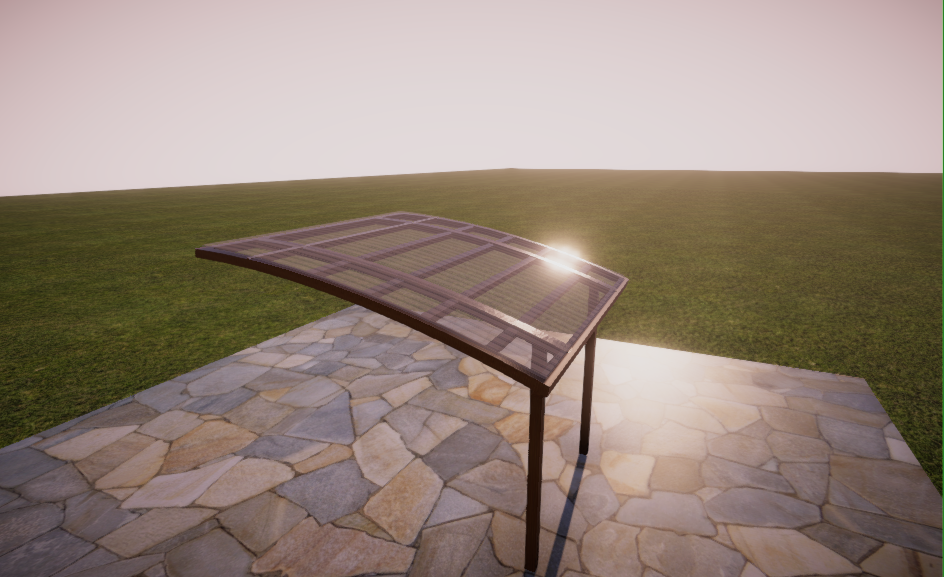
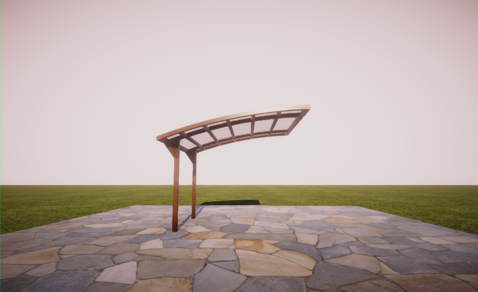
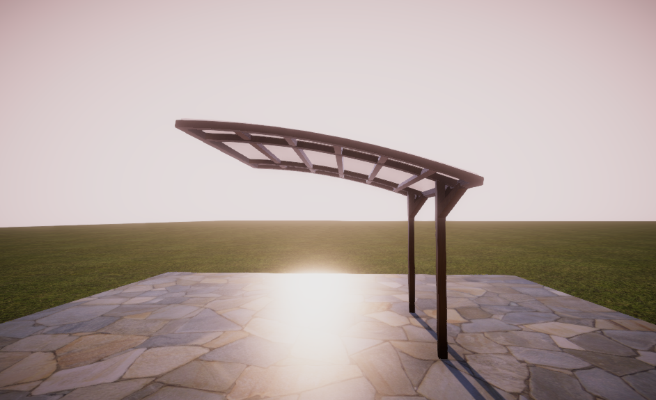
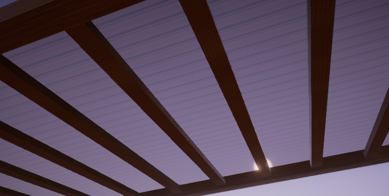

Wróć
(z jakiegoś powodu nie mam nagrań nowszych wersji chociaż pamiętam, że je nagrywałem :D)
Nagrania stworzone podczas powstawania aplikacji:
(tak samo z jakiegoś powodu nie mam screenów z nowszych wersji, nawet z tych,
które są widoczne na nagraniach powyżej :D)
Zrzuty ekranu:





